人工神经网络试图模仿人脑的工作方式。它们被用来解决一些困难的问题，例如理解书面或口头语言，识别图像中的物体，或驾驶汽车。
您将学习人工神经网络如何工作的基础知识，了解训练它所需的步骤和数学计算，并对复杂的神经网络有一个大致的了解。
本章将涵盖以下主题:
要完成本章，您需要从位于https://GitHub . com/packt publishing/Hands-On-Machine-Learning-with-Microsoft-Excel-2019/tree/master/chapter 09的 GitHub 资源库下载transfusion.xlsx文件。
神经网络的灵感来自人脑，更具体地说，来自组成它的神经元细胞。事实上，自从第一个人工神经元被设计出来后，神经科学已经有了很大的进步，可以说它们是受到了几年前对大脑的了解的启发。
感知器是建立人工神经网络的第一次尝试(弗兰克·罗森布拉特，1959)。它实际上是一个单个神经元的模型，有多个输入和一个输出。输出值计算为输入值的加权和，这些权重迭代调整。这种简单的实现有许多缺点和限制，所以它后来被多层感知器所取代。这种人工神经网络的最基本模型具有下图所示的结构:
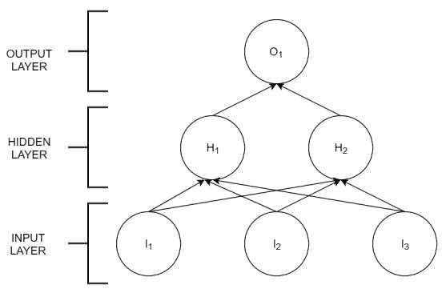
输入和输出层取自感知器，但现在添加了一个隐藏的节点层。这一层中的每个节点实际上充当一个神经元。为了理解每个神经元的输入和输出是如何工作的，以及信息是如何通过网络发送的，我们需要知道每个神经元是如何构建的细节。人工神经元的示意图可以表示如下:
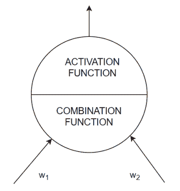
组合函数将结果输入计算为 w i 加权的输入之和。激活功能使用该输入计算输出。输出范围通常限制在[0；1]，使用不同的功能。通常情况下，只有当输入值高于某个阈值时，神经元才传输信号。
人工神经网络是如何学习的？使用输出已知的训练数据集。将输入值输入网络，将预测输出与实际输出进行比较，并在每一步迭代调整 w i 权重。这意味着神经网络是一个监督学习模型。
问题越复杂，调整权重所需的训练样本数量就越大。我们还将看到，隐藏层和神经元的数量也根据问题进行调整。微调这些参数是一个复杂的问题，几乎本身就是一个研究领域。
人工神经网络是有用的，因为它们可以模拟任何数学函数。因此，即使输入值之间的关系未知，我们也可以使用网络来重现它并进行预测。
由于训练过程可能很复杂，并且在训练时调整的参数数量很大，因此通常很难理解为什么人工神经网络能够正确预测给定值。基于神经网络的人工智能模型的可解释性也是一个广泛研究的问题。
神经网络的一些应用如下:
让我们通过一个例子来看看培训在实践中是如何工作的。
我们将使用来自台湾新竹市输血服务中心的公共数据集(由 Yeh，I-Cheng，Yang，King-Jang 和 Ting，Tao-Ming 著，使用伯努利序列对 RFM 模型的知识发现，专家系统与应用，2008)。该集合包含献血者的信息，概括为五个变量:
我们希望证明人工神经网络可以从前面的前四个特征中学习到多好，并预测目标变量五。按照以下步骤重现并学习已经在transfusion.xlsx文件中显示的计算:
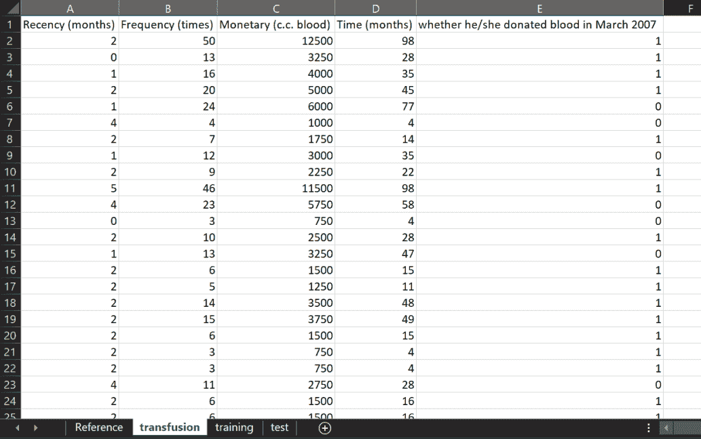
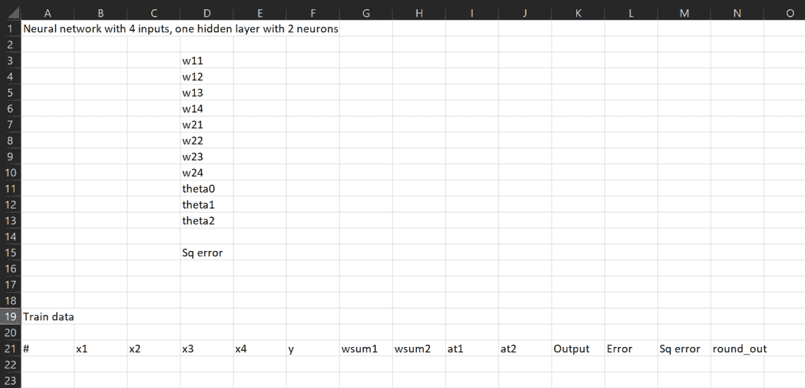
如果我们建立一个具有四个输入(输入数据中的四个特征)和一个包含两个神经元的隐含层的人工神经网络，我们需要八个权重参数:隐含神经元 1 的w11、w12、w13和w14，隐含神经元 2 的w21、w21、w23和w24。其余参数将在后面解释。
隐藏神经元 j 的组合函数是输入的加权和，如下式所示:
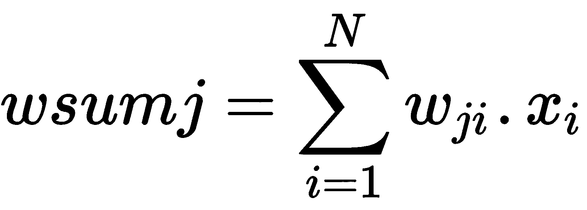
在我们的例子中， N=4 ，这给出了下面两个表达式:
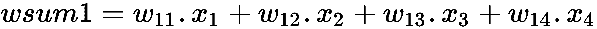
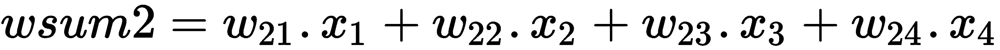
= $ E $ 3 * B22+$ E $ 4 * C22+$ E $ 5 * D22+$ E $ 6 * E22
在单元格 H22 中，写下以下内容:
= $ E $ 7 * B22+$ E $ 8 * C22+$ E $ 9 * D22+$ E $ 10 * E22
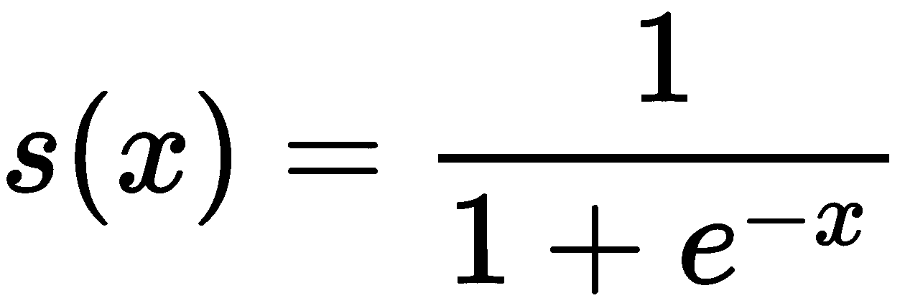
在我们的例子中，x 是为每个隐藏神经元和用于训练的每个条目计算的组合函数:
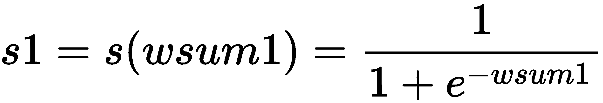
= $ E $ 11+$ E $ 12 * I22+$ E $ 13 * J22
我们正在最小化的函数，误差平方和，只是一个可能的损失函数 。还有其他函数用于比较神经网络的输出和训练值。研究何时应用每个函数在更高级的机器学习书籍中有所展示。
我们现在可以使用 Excel 的求解器将值设置为 w 11 、w 12 、w 13 、w 14 、w 2 、w1、w 21 、w 23 、w 24 、θ o 、θ 1 【T21
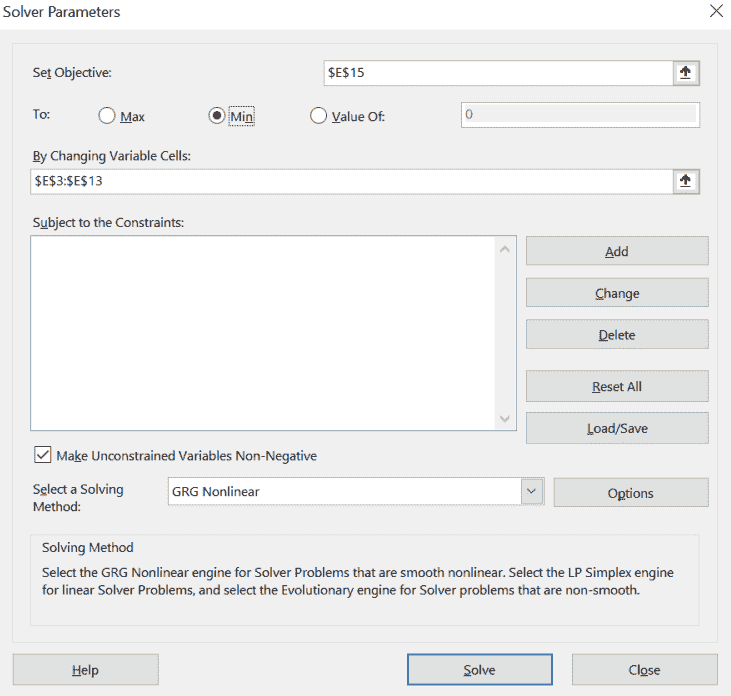
目标是 E15，在这里我们存储误差平方和，以及可变单元格 E3 到 E13。
|
参数 |
值 |
|
w11 |
-3.915205816 |
|
w12 |
0.055009315 |
|
w13 |
0.016855755 |
|
w14 |
-0.301397506 |
|
w21 |
-0.016701972 |
|
w22 |
0.451221978 |
|
w23 |
-0.001645853 |
|
w24 |
-0.011395209 |
|
theta0 |
-0.349977457 |
|
theta1 |
0.247932886 |
|
θ2 |
1.256803829 |
|
平方误差 |
77.02669809 |
根据规划求解中使用的回归类型和初始值，结果可能会有所不同。梯度下降算法搜索(在理解反向传播算法一节中解释)可能陷入局部最小值，该值大于全局最小值。
|
真实的 |
|||
|
one |
Zero |
||
|
预测 |
one |
Thirty-two |
Twenty-two |
|
Zero |
Eighty-six |
Three hundred and sixty |
使用混淆矩阵来衡量神经网络训练的准确性。
一旦您对训练感到满意，您就可以使用获得的参数值来预测其余数据的 y 值(这在训练中从未使用过，然后可以用于测试网络输出)。
按照以下步骤使用测试数据集预测目标变量:
我们现在已经开发了一个简单的练习，展示了人工神经网络如何从输入数据中学习。我们所做的计算是反向传播算法的基础，这将在本章的最后一节详细解释。
我们的人工神经网络的例子非常简单，只包含一个隐藏层。我们能增加更多的层吗？我们当然可以！复杂性的下一步可能类似于下图:
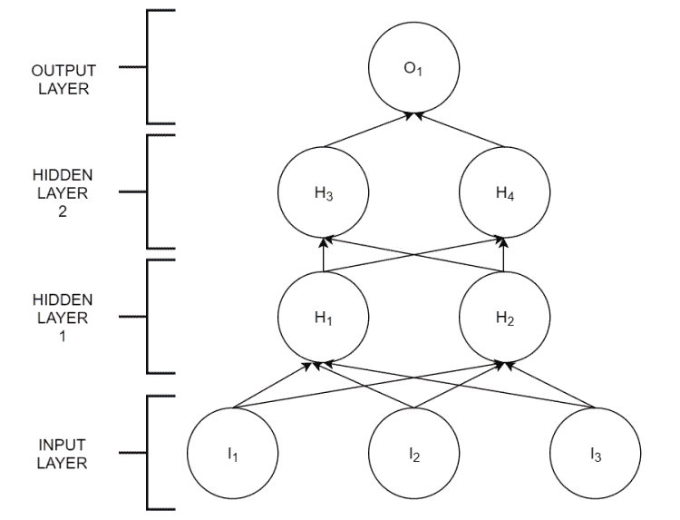
我们添加了一个新的隐藏层，有两个神经元，但我们可以添加更多的层和每层更多的神经元。网络的架构取决于我们赋予它的特定用途。多层人工神经网络通常被称为深度神经网络 。
深层网络的输出计算类似于单层网络，考虑到每个神经元的所有输入、激活函数以及输出神经元的所有输入的相加。从上图可以清楚地看出，网络中的每一层都受到前一层的影响。通常情况下，为了解决复杂的问题，每一层都学习一组特定的特征。例如，在识别图像时，第一层可以训练颜色，第二层训练形状，第三层训练对象，依此类推，随着我们向输出前进，复杂性会增加。
随着我们向网络中添加更多的神经元，我们需要调整更多的参数。这在实践中的实现方式将在下面描述反向传播算法的部分中变得清楚。
深度神经网络的训练过程有两个阶段:前向和反向传播。我们已经详细了解了前进阶段:
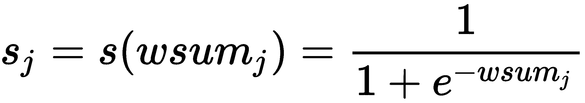
在本章末尾的建议阅读中找到不同的激活函数。sigmoid 函数是最常见的，也更容易使用，但不是唯一的函数。
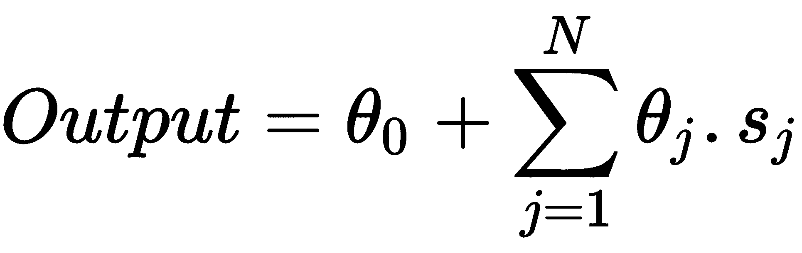
在正向阶段之后，我们将误差计算为输出与已知目标值之间的差值:误差=(输出-y) 2 。
在前向阶段开始时，所有权重都被分配了随机值。
输出以及误差是权重wIT3】和θIT7】的函数。这意味着我们可以从误差中回溯，看看每个重量的微小变化是如何影响结果的。这用数学术语表示为导数或梯度:
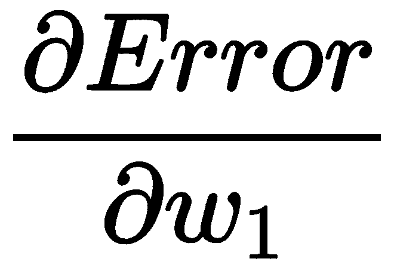
每当我们稍微改变 w 1 时，这个等式测量误差的变化。我们实际上在每个神经元内部应用了一个激活函数，因此误差的变化转化为以下等式(称为链式法则):
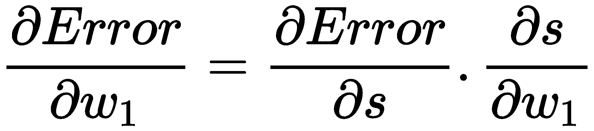
我们希望在减小误差的方向上改变所有的权重值。这就是优化方法被称为梯度下降的原因。如果我们把误差想象成两个权重的函数(当然不止两个，但是我们人类很难超越三维去思考！)，我们可以将这种优化描述如下:
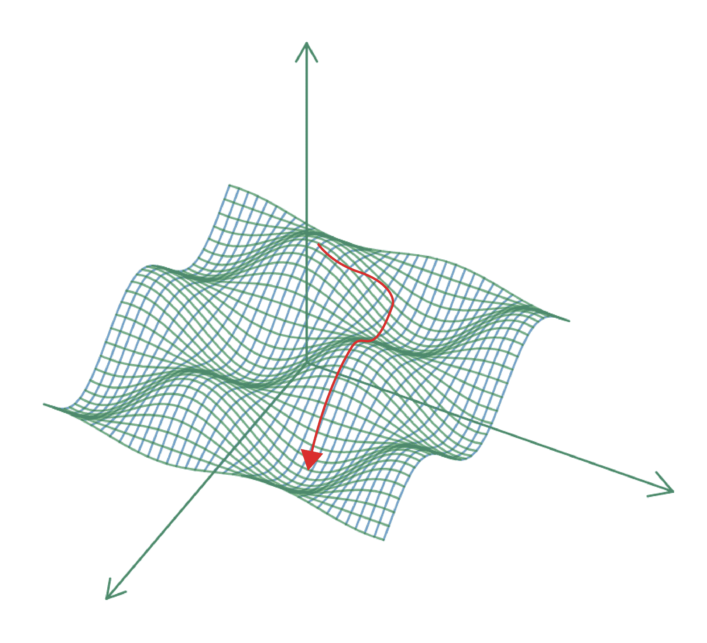
什么时候调整重量？有三种方法:
我们现在已经熟悉了人工神经网络是如何构建的，以及它们的输出是如何计算的。随着网络规模的增长，执行这些计算通常是不切实际的，这在所有实际和有用的实施中经常发生。
我们已经研究了人工神经网络如何构建以及它们如何从输入数据中学习的基本原理。即使在实践中，使用神经网络的实际方法与我们在示例中所做的不同，我们的方法对于理解细节和超越神经网络是神奇地解决问题的神秘黑盒的想法是有用的。
在下一章中，我们将看到如何使用 Azure 中可用的预建机器学习模型，将它们连接到 Excel 来解决我们到目前为止提出的问题。